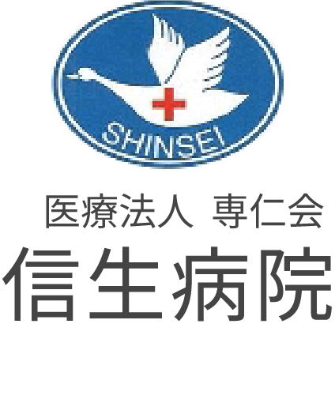

<!-- /partials/sidebar.html -->
<aside id="site-sidebar" class="sidebar sidebar--sheet" aria-hidden="true">
    <div class="sb-fit" id="sb-fit">
      <div class="shead shead--stack">
        
        <p class="shead__zip">〒682-0017</p>
        <p class="shead__addr">鳥取県倉吉市清谷町１丁目286番地</p>
        <a class="shead__tel" href="tel:0858-26-7773" aria-label="電話する">
          <span class="shead__tel-ico">📞</span>
          <span class="shead__tel-num">0858-26-7773</span>
        </a>
      </div>
  
      <nav class="snav snav--flat" aria-label="サイトメニュー">
        <a class="snav__item" href="/">トップページ</a>
        <a class="snav__item" href="/about.html">病院概要</a>
        <a class="snav__item" href="/dept.html">部門紹介</a>
        <a class="snav__item" href="/medical.html">診療科目</a>
        <a class="snav__item" href="/outpatient.html">外来</a>
        <a class="snav__item" href="/checkup.html">一般・特定健診</a>
        <a class="snav__item" href="/vaccine.html">予防接種</a>
        <a class="snav__item" href="/inpatient.html">入院</a>
        <a class="snav__item" href="/homecare.html">居宅介護事業所</a>
        <a class="snav__item" href="/contact.html">お問い合わせ</a>
      </nav>
  
      <div class="sminor sm-plain">
        <a class="sminor__item" href="/access.html">
          <span class="sminor__dot"></span><span>アクセス</span>
        </a>
        <a class="sminor__item" href="/recruit.html">
          <span class="sminor__dot"></span><span>求人情報</span>
        </a>
      </div>
    </div>
  </aside>
  
  <button class="sidebar-toggle" aria-controls="site-sidebar" aria-expanded="false">
    <span class="chev" aria-hidden="true"></span><span class="sr-only"></span>
  </button>
  
  <div class="sidebar-mask" hidden></div>
  